1. Top-Down Aerial Masterplan
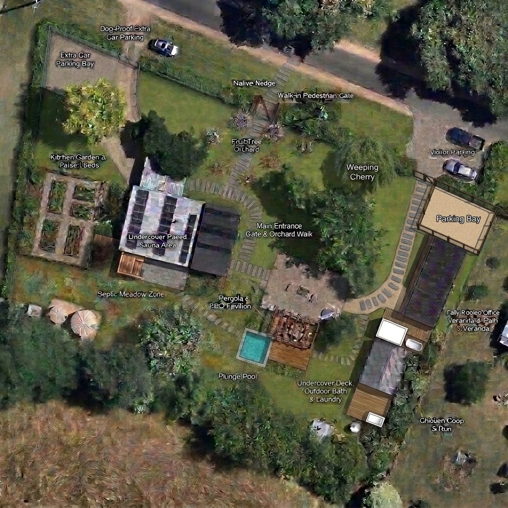
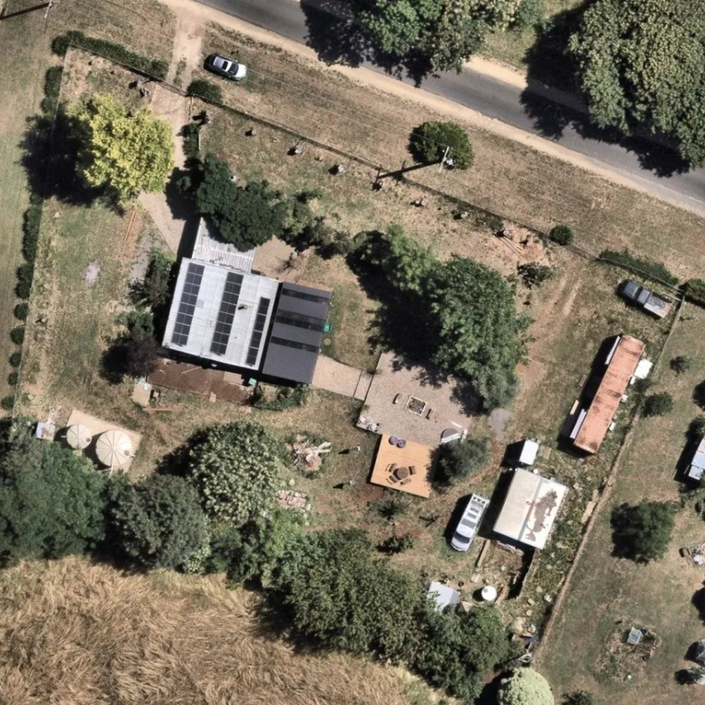
1. Original 80cm Square Deck + Left Plunge Pool
Keeps the existing square hardwood deck footprint intact under a vine pergola. The plunge pool sits on a ground-level slab immediately to the left (West) of the 80cm-high deck so its rim aligns with the deck floor.
2. Sauna Inside Slat Enclosure (South of House)
A dark skillion roof spans over the sleeper-edged pad south of the house, housing the Sauna inside the vertical timber slat screen with a clear bluestone-paved outer walkway.
3. Human-Only North Gate & Orchard Walk
Pedestrian gate in the North road fence with a stone-and-gravel path winding through the Fruit Tree Orchard straight around to the East-facing Main Entrance Double Doors.
4. Container Office, Bathroom Deck & Connecting Gravel Path
Continuous roof over the shipping container office, 3m western timber deck, and white outdoor bathroom/bath/laundry zone—linked by a gravel & stepping-stone path running from NE Visitor Parking past the container office straight into the Firepit Courtyard.
2. Container Office & 3m Roofed Veranda (View from Firepit)
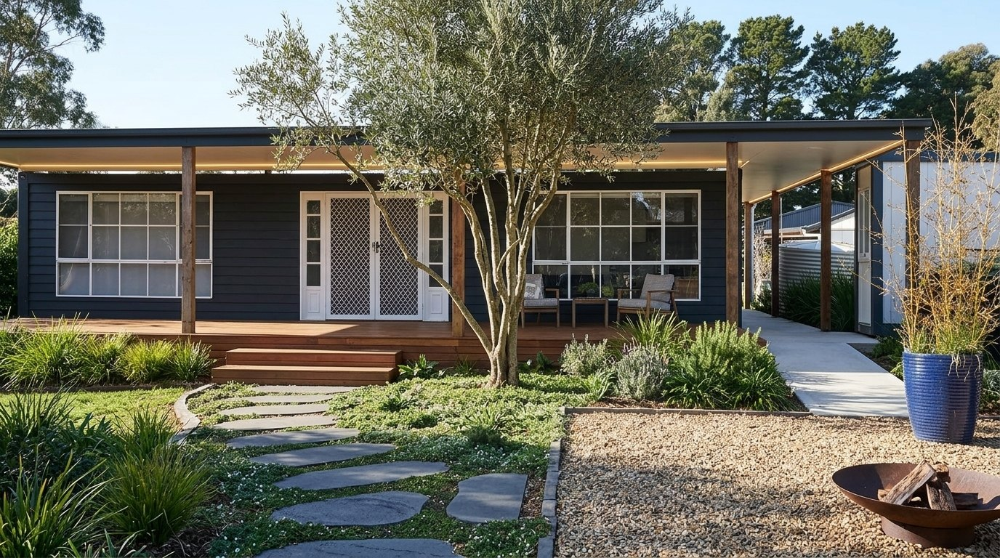
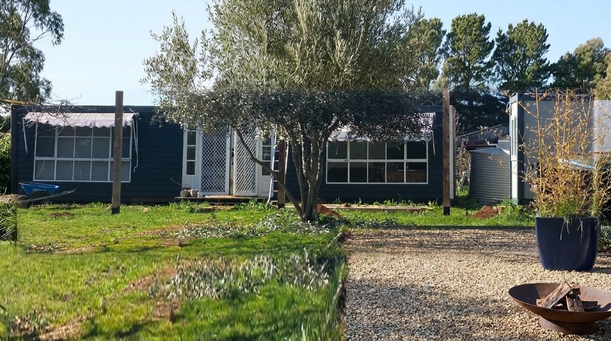
Built Onto Your Existing Posts
Spans a continuous insulated roof across the container and out to your four concreted timber posts, shading the large multi-pane windows so the old canvas awnings can be removed.
Covered Shower/Toilet Pod Breezeway
Extends the roofline across the right-hand side to give 100% weather-protected access to the self-contained white shower/toilet pod while screening the water tank and shed behind it.
3. Undercover Paved Sauna Inside the Slat Screen (View from Water Tanks)
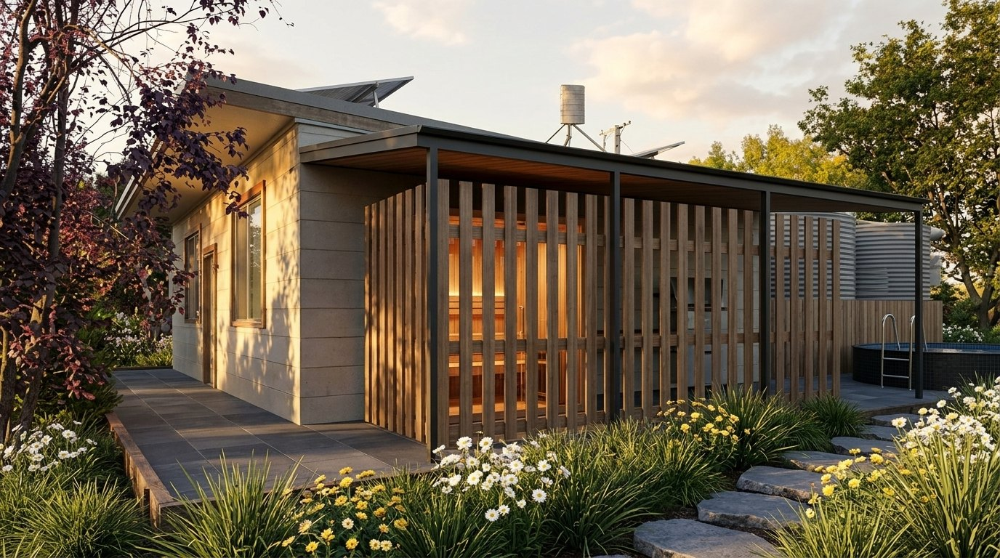
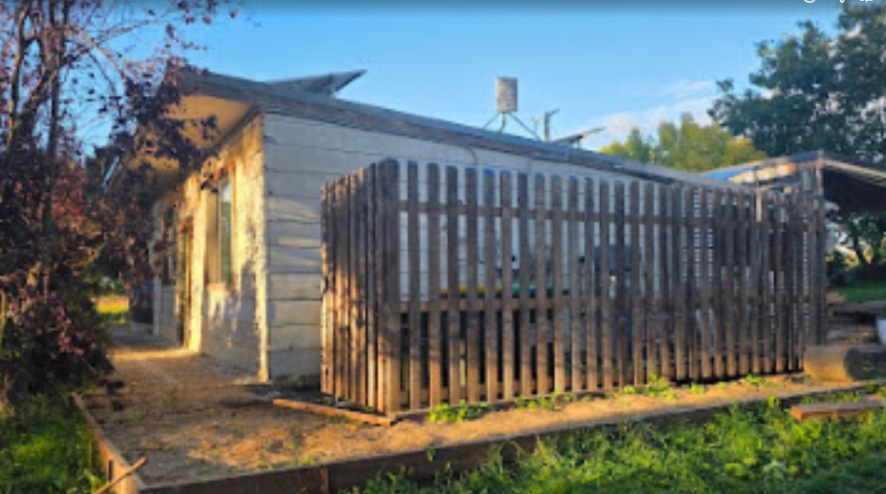
Sauna Inside the Slat Enclosure
Tucks the cedar and glass sauna directly inside the vertical timber slat privacy screen under a new dark steel-and-timber skillion roof attached to the southern house fascia.
Paved Apron & Plunge Pool Path
Paves the outer walkway inside the timber sleeper edge with charcoal bluestone pavers, while stepping stones lead right (east) through the Septic Meadow straight to the Plunge Pool.
4. View North-West from the 80cm-High Timber Deck
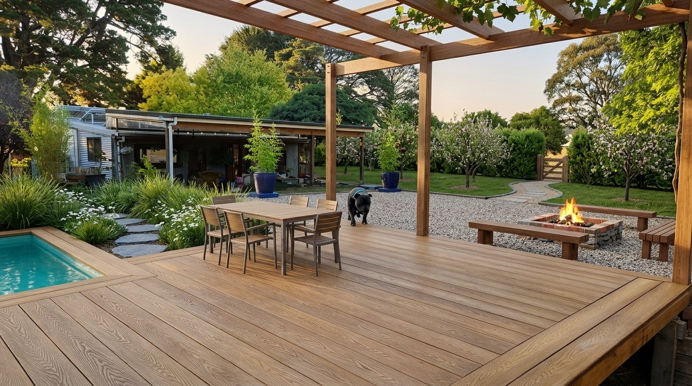
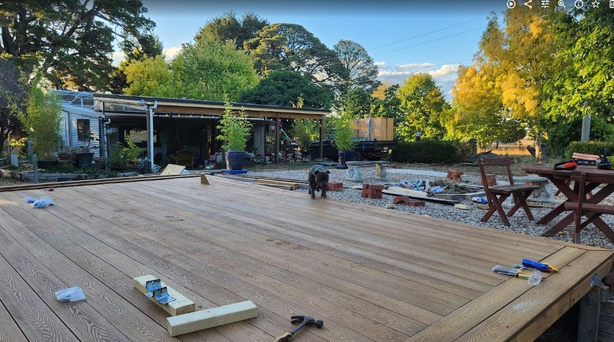
Ground-Floor Plunge Pool Beside 80cm Deck
Because your existing square deck is raised 80cm off the ground, placing an 80–100cm-deep plunge pool on a ground slab immediately to the left (West) of the deck brings the top rim flush with the decking—no deep excavation required, and pool equipment tucks neatly under the 80cm deck cavity.
Overhead Vine Pergola & North Gate View
An open-rafter hardwood pergola with deciduous grapevines shades the deck in summer while letting winter sun through. In the background right, the North Pedestrian Gate and Orchard Path wind down to the house.
5. Main House Entrance — East-Facing Double Doors (View from Firepit)
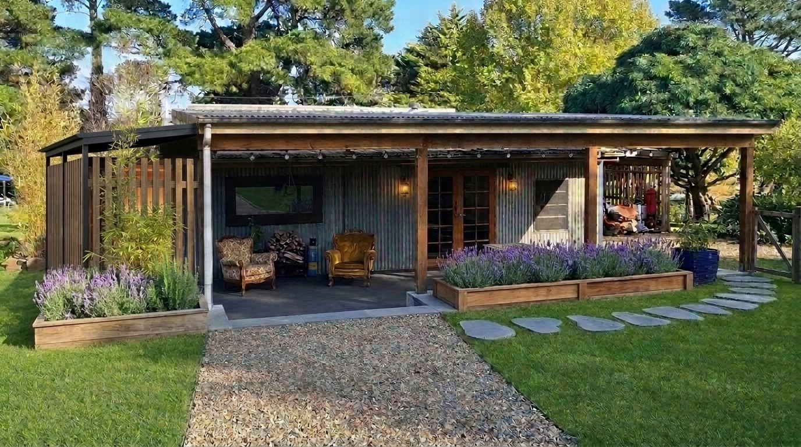
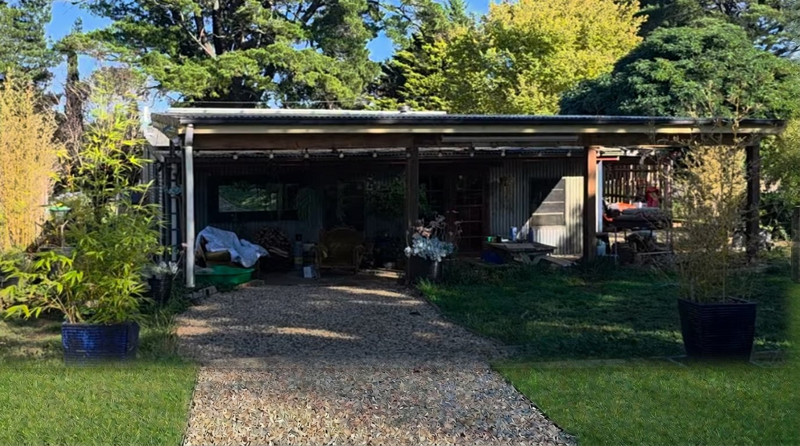
1 Step Down into the Sunken Paved Verandah
The rock path (framed by green lawn on both left and right) steps one step (1ft) down via a bluestone coping edge into the sunken paved verandah floor leading to the central timber French double doors.
Raised Timber Lavender Planters & Orchard Path
Built-in raised wooden planter boxes filled with purple lavender frame both the right-hand verandah edge and the left side beside the bamboo pot, while bluestone stepping stones from the North Orchard Gate curve across the right lawn.
6. Sunken Brick Firepit & Courtyard Border Upgrade
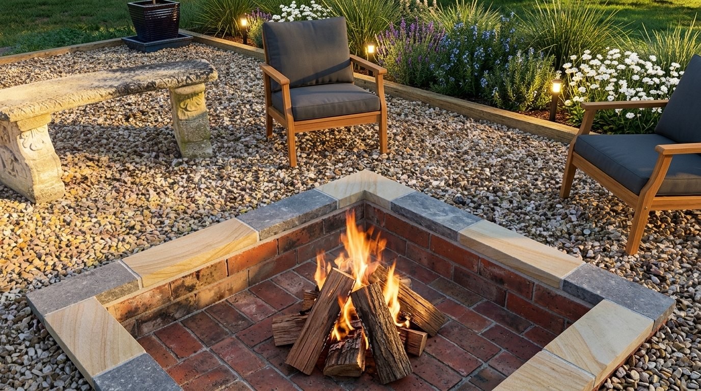
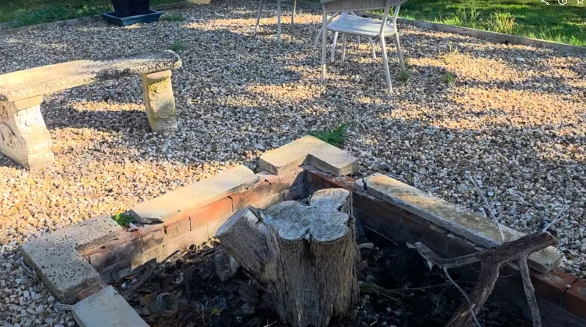
Mortared Bullnose Coping Rim
Mortaring continuous sandstone and bluestone coping slabs onto the top brick course (sitting ~50–75mm proud of the gravel) keeps pebbles out of the fire while preserving the sleek sunken pit.
Outer Sleeper Border Planting
A 600mm-wide border bed outside the timber sleeper edge planted with Lomandra, rosemary, lavender, and white daisies with 12V garden bollard lights.
7. Planting & Material Quantities Schedule
A. Plant Schedule by Zone
| Zone | Species / Variety | Pot Size | Spacing | Est. Qty | Notes |
|---|---|---|---|---|---|
| North & East Road Hedge (Back Row) | Adenanthos sericeus (Woolly Bush), Callistemon 'Slim', Dodonaea viscosa 'Purpurea' | 140–200mm | 1.5–1.8m | 28–35 | Staggered between old stumps; 3–4m height (safe under powerlines). |
| North Road Hedge (Front Row Dust Trap) | Westringia fruticosa 'Grey Box' & Correa alba | 140mm | 1.0–1.2m | 30–40 | Planted 1.2m in front of back row to seal lower gaps against road dust/noise. |
| North Orchard Entrance Walk | Dwarf Apple (×2), Pear, Apricot, Plum, Fig ('Black Genoa') | Bare-root / 25L | 3.0–3.5m | 6–8 trees | Flanking the human-only pedestrian path from the North Gate. |
| Main Entrance & Firepit Borders | Lavandula × intermedia, Rosmarinus officinalis, Lomandra 'Tanika', Brachyscome | 140mm | 0.6–0.8m | 45–60 | Framing the double-door walkway, firepit sleeper border & container deck. |
| SW Septic Transpiration Meadow | Lomandra 'Tanika', Poa labillardierei, Chrysocephalum apiculatum | Tubestock / 140mm | 0.6–0.8m | 60–80 | Shallow fibrous roots only—safe over septic absorption trenches. |
| Deck Pergola Climbers | Vitis vinifera (Ornamental / Table Grapevine) | 200mm | Corner posts | 2–4 vines | Dense summer shade over the 80cm-high deck; lets full winter sun through. |
| Shed & Tank Screen (South-East) | Callistemon 'Kings Park Special' & Pittosporum 'Screen Between' | 200mm | 1.5m | 10–14 | Screens grey shed, chicken run & water tank beside shower pod. |
B. Hardscape & Building Materials Allowance
| Item / Zone | Specification | Est. Quantity / Allowance |
|---|---|---|
| Container Office 3m Veranda Roof & Deck | Insulated Colorbond roof panels + hardwood decking onto existing posts + covered link to shower/toilet pod | ~36–42 m² roof & deck area |
| Sauna Skillion Roof & Paved Apron | Dark steel/timber skillion roof off south house fascia + 600×400×20mm charcoal Bluestone pavers around slat screen | ~18–24 m² paving + roof |
| Ground-Floor Plunge Pool Slab (West of Deck) | 150mm reinforced concrete slab at ground level beside western edge of 80cm-high deck (pool rim flush with deck floor) | ~3.0m × 2.0m slab (or 2.2m round) |
| Bluestone Stepping Pavers (All Paths) | 800×400×30mm sawn bluestone steppers (North Gate → Double Doors, Firepit → Office, Sauna → Pool) | 55–70 pavers |
| Compacted Topping / Pebble Gravel | 14mm granitic sand/gravel topping & river pebble top-up for walkways + NE Visitor Parking Pad | 8–12 m³ |
| Sunken Firepit Coping Rim | 500×300×40mm bullnose sandstone or bluestone coping pavers mortared to existing brick pit rim | 12–16 coping slabs |
| West Kitchen Garden Raised Beds | 4 × Corten steel or hardwood sleeper beds (2.4m × 1.2m × 0.45m high) + rabbit/dog fence & gate | 4 beds (~5.5 m³ veggie soil mix) |
| Coarse Bush Mulch | 100mm deep across North hedge belt, orchard circles, and garden beds | 12–15 m³ |